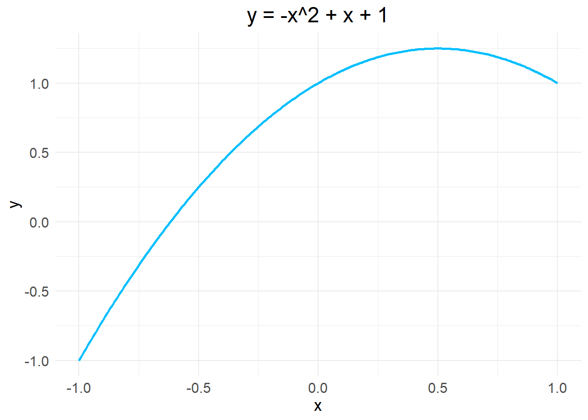
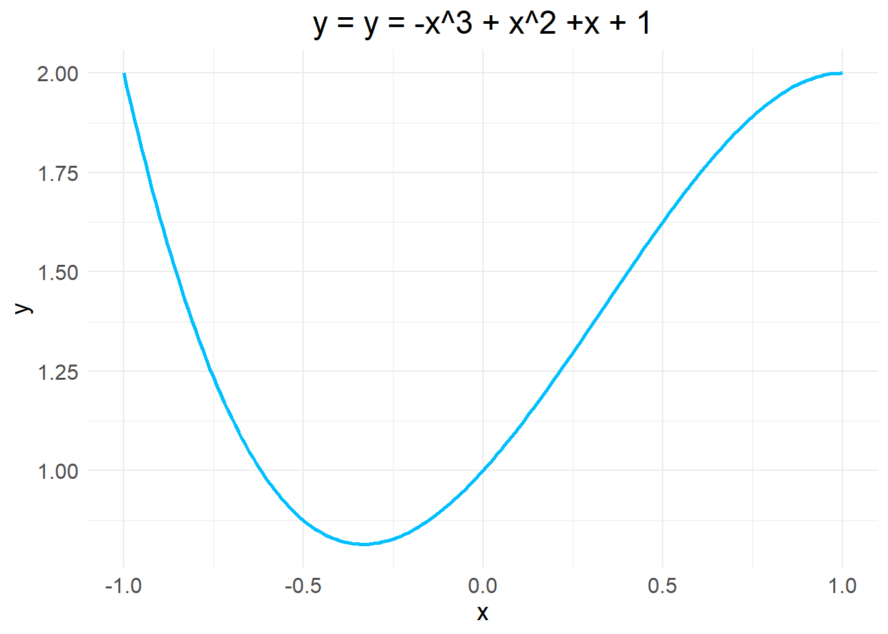
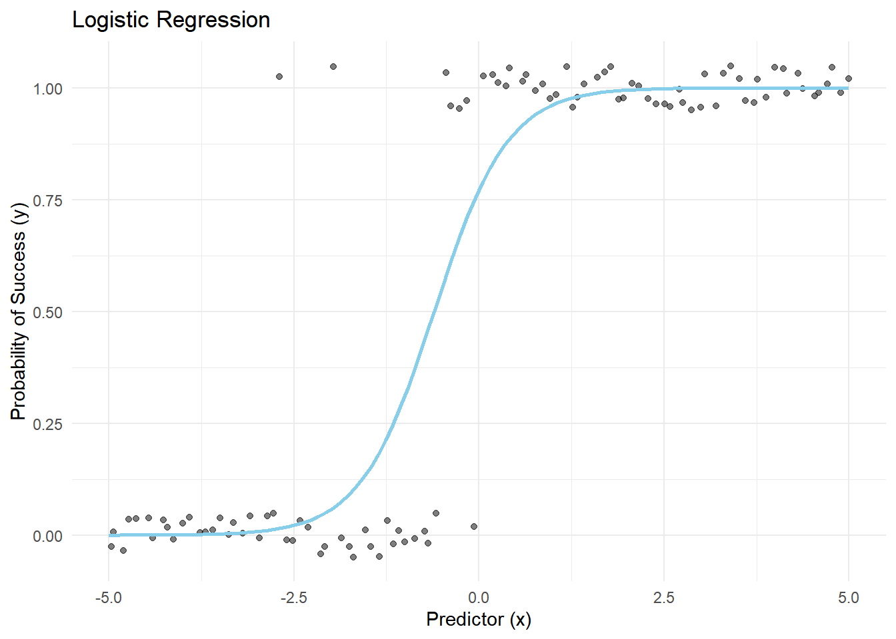
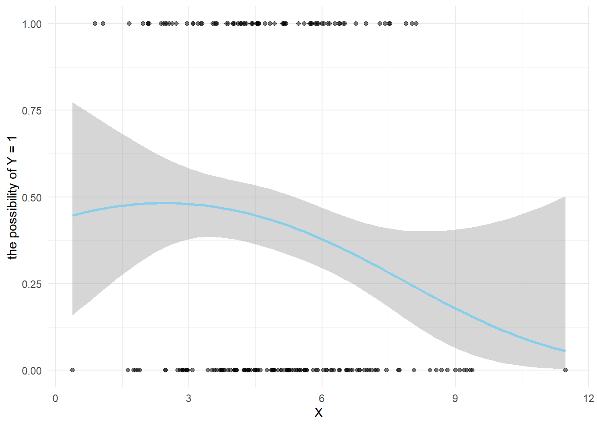

Chapter 2 Linear and Non-linear SEM
SEM is built on factor analysis and regression, and I’d recommend reviewing regression before you start. Of course it’s fine if you don’t have a lot of knowledge in this area, from an application standpoint you just need to understand the indicators as well as interpret the results.
we use simple slope to get the path effect and calculate mediation effect, so it is very simple to label these effects. Let us starts with simple mediation model:
\[ X\to M: \\ M = aX + i _{1} \\ ~\\ Mediation(indirect)~Path: X\to M \to Y: \\ Y = bM + i _{2} = b(aX + i _{1}) + i _{2} = abX + bi _{1} + i _{2}\\ ~\\ Direct ~ Path: X \to Y:\\ Y = cX + i _{3}\\ ~\\ Total ~ Effect: \\ Y = bM + i _{2} + cX + i _{3} = (ab + c)X + i \\ \]
2.1 What is the direct and indirect effect?
- Direct effect: such as X - Y, X - M, M - Y, reveals the independent effect of the independent variable, will not influence by any other mediators.
- Indirect effect: such as X - M - Y, is X influence M and thus has impact on Y, which quantified as the product of a(X - M) and b (M - Y). When X changes by one unit, eventually Y will change ab units.
Here, the slope of f(X) is what we want, representing the linear relationship between the variables because it quantifies the rate of change. We can get the slope by derivation.
Let’s review the simple inverse rule first \[ f(X) = x^{n} \\ f'(x) = n\times x^{n-1} ~\\ Instantaneous ~ rate ~ of ~ change = \frac{\mathrm{d} y}{\mathrm{d} x} \\ Y = log_{e}(X) = In(X)\\ e^{Y} = X\\ Derivation ~ of ~ this ~ equation:\\ 1 = e^{Y}\frac{\mathrm{d} y}{\mathrm{d} x} \\ Y' = \frac{1}{X} \] Next, let’s derive the functions of M and Y. \[ X\to M: \\ M'(X) = a\\ ~\\ Mediation(indirect)~Path: X\to M \to Y: \\ Y'(X) = ab\\ ~\\ Direct ~ Path: X \to Y:\\ Y'(X) = c\\ ~\\ Total ~ Effect: \\ Y'(X) = ab + c \] Hence, we will know the indirect effect is ab, direct effect is c, and the total effect is ab + c. Depending on your theory, your model will change, and therefore the formula for the effect value will change, but you can derive the specific effect value from the formula.
Note that since there is a causal relationship between X and M, M is not independent; X is not affected by any other factor and thus it is independent. Therefore, when estimating the indirect effect of X on Y, M should not be viewed as an independent variable, but rather transformed in the form of X.
2.2 Nonlinear SEM from a math way
when we are talking about nonlinear SEM, what we are talking about? some of them may be qudric or cubic, or looks like Y = e^X
the plot will look like:
Parabola
x <- seq(-1, 1, by = 0.01)
data <- data.frame(x = x, y = -x^2 + x + 1)
ggplot(data, aes(x = x, y = y)) +
geom_line(color = "deepskyblue", size = 1) +
labs(title = "y = -x^2 + x + 1", x = "x", y = "y") +
theme_minimal() +
theme(
plot.title = element_text(hjust = 0.5, size = 18),
axis.title = element_text(size = 14),
axis.text = element_text(size = 12)
)
S-shaped curve
x <- seq(-1, 1, by = 0.01)
data <- data.frame(x = x, y = -x^3 + x^2 +x + 1)
ggplot(data, aes(x = x, y = y)) +
geom_line(color = "deepskyblue", size = 1) +
labs(title = "y = y = -x^3 + x^2 +x + 1", x = "x", y = "y") +
theme_minimal() +
theme(
plot.title = element_text(hjust = 0.5, size = 18),
axis.title = element_text(size = 14),
axis.text = element_text(size = 12)
)
2.3 How to caculate the slope?
Apparently we cannot just use ab as the indirect path effect, because the relationships between these variables are not linear. However,the derivative can be used to find the slope, or instantaneous slope, of a curve at a point.
2.3.1 Quadratic curve
Let’s start by assuming that the relationship between X and M and Y is quadratic. \[ X\to M: \\ M = a_{2}X^{2} + a_{1}X + i _{1} \\ ~\\ Mediation(indirect)~Path: X\to M \to Y: \\ Y = bM + i _{2} = b(a_{2}X^{2} + a_{1}X + i _{1}) + i _{2} = a_{1}bX + a_{2}bX^{2} + bi _{1} + i _{2}\\ ~\\ Direct ~ Path: X \to Y:\\ Y = c_{2}X^{2} + c_{1}X + i _{3}\\ ~\\ Total ~ Effect: \\ Y = bM + i _{2} + c_{2}X^{2} + c_{1}X + i _{3} = (a_{1}b + c_{1})X + (a_{2}b + c_{2})X^2 + i _{2} + i _{3} \\ \]
Next perform the derivation.
\[ X\to M: \\ M'(X) = 2a_{2}X + a_{1}\\ ~\\ Mediation(indirect)~Path: X\to M \to Y: \\ Y'(X) = a_{1}b + 2a_{2}bX = (a_{1}+2a_{2}X)b\\ ~\\ Direct ~ Path: X \to Y:\\ Y'(X) = 2c_{2}X + c_{1}\\ ~\\ Total~Effect: Y'(X) = (a_{1}b + c_{1}) + 2(a_{2}b + c_{2})X \]
2.3.2 Cubic Curve
The following derivation will omit the constant term.
\[ X\to M: \\ M = a_{3}X^3 + a_{2}X^{2} + a_{1}X \\ ~\\ Mediation(indirect)~Path: X\to M \to Y: \\ Y = bM + i _{2} = (a_{3}b + c_{3})X^3 + (a_{2}b + c_{2})X^{2} + (a_{1}b + c_{1})X\\ ~\\ Direct ~ Path: X \to Y:\\ Y = c_{3}X^{3} + c_{2}X^{2} + c_{1}X\\ \]
Next perform the derivation.
\[ X\to M: \\ M'(X) = 3a_{3}X^2 + 2a_{2}X + a_{1}\\ ~\\ Mediation(indirect)~Path: X\to M \to Y: \\ Y'(X) = (a_{1}b + c_{1}) + 2X(a_{2}b + c_{2}) + 3X^2(a_{3}b + c_{3})\\ ~\\ Direct ~ Path: X \to Y:\\ Y'(X) = 3c_{3}X^2 + 2c_{2}X + c_{1} \]
2.4 Introducing the confounding variable W
When the relationship between X - M and M - Y is linear, W does not affect the indirect effect since the constant term W will be omitted in the derivation. These relations are fixed for the indirect effect regardless of the value of W after controlling for W.
However, when the M - Y relationship is nonlinear, W will affect the indirect effect.
\[ M = aX + d_{1}W\\ Y = b_{1}M + b_{2}M^2 + d_{2}W\\ Y' = 2a^2b_{2}X + 2ab_{2}d_{1}W + ab_{1} \]
2.5 what is the relationship between moderated mediation and Nonlinear SEM?
https://gabriellajg.github.io/EPSY-579-R-Cookbook-for-SEM/

Figure 2.1: This is a caption for the image
2.6 Practice in R: Cross-sectional
2.6.1 Centering and Scaling
Centering and scaling are done to change the intercept and slope, respectively, and the main purpose of doing so is so that the results can be interpreted better. For example, we sometimes care more about the trend than the baseline level, so we can subtract the value of the baseline level, which is centering. Moreover, centering can reduce nonessential multicollinearity. Scaling allows all variables to be compared at the same level, similar to ” standardization”.
2.6.2 Syntax in R
Because the model is non-linear, so if you want to interpret the slope, normally we will use “representative values”, M±SD, which is similar to the interactions or moderators. Alternatives might be the 25th, 50th, and 75th percentiles.
X2 is the quadratic of X, if you want to do the further analysis in Mplus you may need to do transform x^2 to X2. Or you can just use (X^2) in R.
NLModel <- '
Y ~ b * M + c1 * X + c2 * X2
M ~ a1 * X + a2 * X2
M ~ 1
Low := -1.5
Mean := 0
High := 1.5
# slope
aLow := a1 + 2 * a2 * Low
aMean := a1 + 2 * a2 * Mean
aHigh := a1 + 2 * a2 * High
# define indirect effect
abLow := b * aLow
abMean := b * aMean
abHigh := b * aHigh
'
set.seed(100)
NLModel.fit = sem(NLModel, data = df, test="scaled.shifted", estimator="MLR", fixed.x = FALSE, se="bootstrap",
bootstrap=1000, meanstructure = TRUE, conditional.x = FALSE)
summary(NLModel.fit, standardized = TRUE, fit.measures = TRUE)# extract parameters
params <- parameterEstimates(NLModel.fit)
i1 <- params[params$lhs == "M" & params$op == "~1", "est"]
# extract path coefficient
a1 <- params[params$label == "a1", "est"]
a2 <- params[params$label == "a2", "est"]
# calculate mediation M
MLow <- i1 + a1 * Low + a2 * Low^2
MMean <- i1 + a1 * Mean + a2 * Mean^2
MHigh <- i1 + a1 * High + a2 * High^2
MLow
MMean
MHigh2.7 If X is dichotomous (draft)
First, use dummy code (0, 1). Second, “quantify the indirect effect of X on Y via M as the instantaneous indirect effect when X is at its lowest coded value.” Consider we are using bootstrap, the inference or results will not change.


\[ Logit ~ Regression:\\ logit(Y) = log(\frac{P(Y = 1)}{1-P(Y = 1)}) = log(\frac{P(Y = 1)}{P(Y = 0)})= bM + c'X + \varepsilon_{Y}\\ ~\\ Probit~Regression:\\ \Phi^{-1} (P(Y = 1)) = bM + c'X + \varepsilon_{Y} \]
logit(Y) is a logistic regression transformation representing the log odds of Y=1 occurring, and P(Y = 1) means the chance of Y=1 occurring; the latter is the inverse function of the cumulative distribution function of the normal distribution and is used in the Probit model.
$$ log() = b_{0} + b_{1}x\ = e^{b_{0} + b_{1}x} \ p = =
$$
CDE: controlled direct effect, we control the M so that we can get direct effect. DE: direct effect
$$ CDE(m) = E[Y(1,m) - Y(0, m)| C = c]\ DE = E[Y(1, M(0)) - Y (0, M(0)) | C = c] = \ _{-}^{} { E[Y|C = c, X = 1, M = m] - E[Y|C = c, X = 0, M = m] } f(M|C = c, X = 0)M\
$$
Total indirect
\[ TIE = E[Y(1,M(1)) - Y(1, M(0))|C = c]\\ = \int_{-\infty }^{\infty } E[Y|C = c, X = 1, M = m] \times f(M|C =c, X = 1) \partial M - \int_{-\infty }^{\infty } E[Y|C = c, X = 1, M = m] \times f(M|C =c, X = 0) \partial M \]
Total effect:
\[ TE = E[Y(1) - Y(0)|C = c]\\ =E[Y(1, M(1)) - Y(0, M(0))|C = c] \]
pure indirect effect
\[ PIE = E[Y(0,M(1)) - Y(0,M(0))| C = c] \]
\[ probit(x, x^{*} ) = \frac{[\beta _{0} + \beta _{2}x + (\beta _{1} + \beta _{3}x)(\gamma _{0} + \gamma _{1}x^{*})]}{\sqrt{v(x)} } \]
variance \[ v(x) = (\beta _{1} + \beta _{3}x)^{2} \sigma _{2}^{2} + 1 \]
We will use Average Causal Mediation Effect (ACME) and Monte Carlo simulation to calculate the mediation effect.
\[ indirect ~ effect:\\ IE(x) = P(Y = 1 | X=x, M = M(x)) - P(Y = 1 | X = x, M = M(x^{*}))\\ ACME = \frac{1}{n} \sum_{i=1}^{n}(P(Y_{i} = 1 |X_{i}, M(X_{i})) - P(Y_{i} = 1 | X_{i}, M(_{i}^{*} ))) \]
2.8 Which model fit best for my theory?
There are some ways you can decide use which model. The model you build is never 100% correct or perfect. State the reason when you decide to use a certain model.Complex models may not be the best.
- Based on your theory or experience.
- Based on the previous literature.
- Data driven: exploratory analysis. Build up several models and check the model fit, R square, plot, or do the model comparison.
2.9 Reference
Hayes, A. F., & Preacher, K. J. (2010). Quantifying and Testing Indirect Effects in Simple Mediation Models When the Constituent Paths Are Nonlinear. Multivariate Behavioral Research, 45(4), 627ג660. https://doi.org/10.1080/00273171.2010.498290